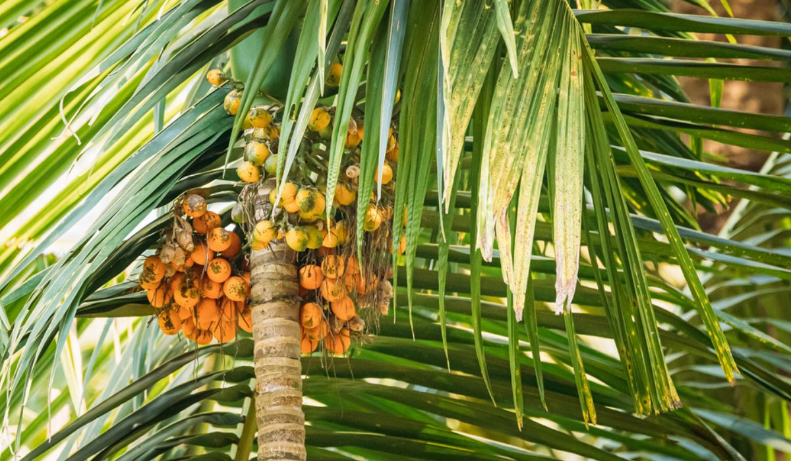

Overview
The plant is known as Puga in Sanskrit and is commonly referred to as Betel Nut Palm.
Botanical Name
Areca catechu
Family
Arecaceae
Regional Names
- Gujarati: Sopari
- Hindi: Supari
- Marathi: Supari
- Telugu: Poka
- Tamil: Kamugu
- English: Betel Nut Palm
Classification (Gana)
Aacharya Sushruta: Salsari, Shyamadi Gana
Bhavprakash Nighantu: Aamradi Phala Varga
External Morphology
15-30 meter high tree
Useful Parts
Important Phytoconstituents
- Catechine
- Arecoline
- Guvecoline
- Arecailine
- Arecolidine
Rasa Panchak
- Rasa: Kashaya, Madhura
- Guna: Laghu, Ruksha
- Virya: Shita
- Vipaka: Katu
Action
Kaphapittahara
Therapeutic Indications
- Deepen: Appetizer
- Vikasi: Losing the connections
- Atisarahara: Anti-diarrheal
- Krimighna: Anti-helminthic
- Pramehaghna: Anti-diabetic
Therapeutic Uses
- Krimi: In tape worm, Kramuka Phala paste with milk is beneficial.
- Raktatisara: Powder with water is given in cases of bleeding diarrhea.
- Upadamsha: Kramuka Phal paste is applied in STDs.
Dose
Formulations
- Khadira Kramuka Kashaya
- Puga Khanda
Adverse Effect
Not Known
Remedial Measures
Not Required